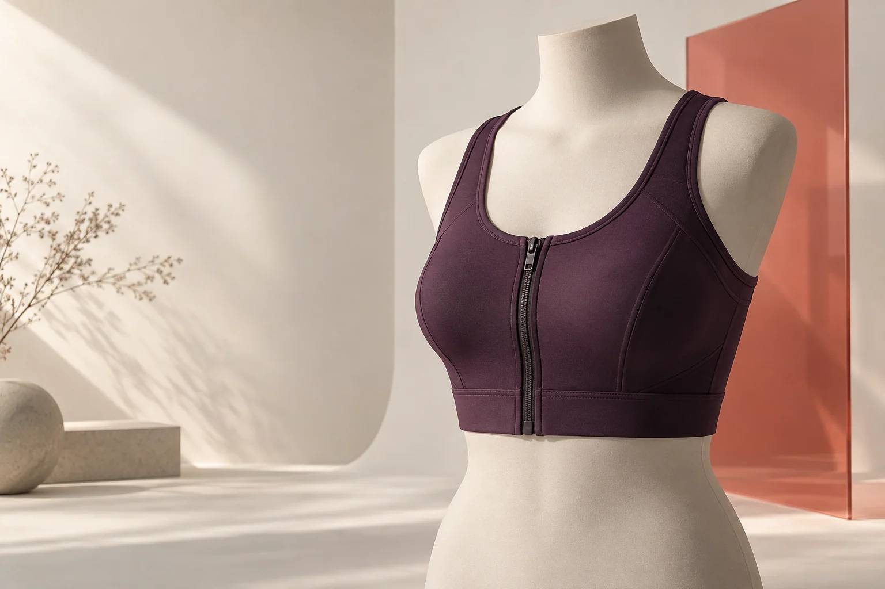
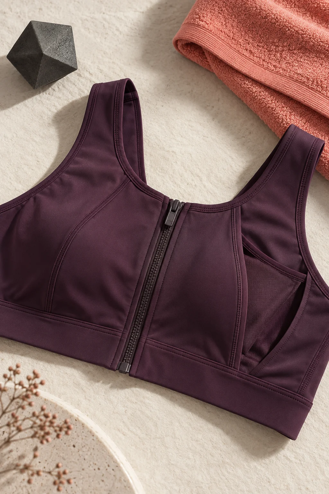

Стандартная спортивная одежда не учитывает особенности фигуры после операции, не фиксирует экзопротезы и может усиливать физический и психологический дискомфорт.
01 Адаптивная одежда нового поколения
Движение.
Без оглядки.
Спортивный топ для женщин после мастэктомии — комфортный, функциональный и созданный для уверенной жизни в своём ритме.

01 / первый продукт
Продуман до движения
Поддержка проекта
Идея, которая становится реальностью
Логотип ФСИофициальный файл будет добавлен
Логотип Платформыофициальный файл будет добавлен
Проект реализован при поддержке Фонда содействия инновациям в рамках программы «Студенческий стартап» мероприятия «Платформа университетского технологического предпринимательства» федерального проекта «Технологии».
02 / О проекте
Одежда должна
Одежда должна
подстраиваться под вас
Спортивный топ с центральной молнией, плоскими швами и незаметными внутренними карманами. Легко надевать, удобно двигаться, спокойно быть собой.
Создать линию спортивной и повседневной одежды, в которой функциональность не спорит с современным дизайном.
Для кого
Для женщин после мастэктомии, которым важны свобода движения, мягкая поддержка и возможность вести активную жизнь без компромиссов.

Тактильный бифлекс · плоские швы
03 / Продукт
Меньше усилий.
Меньше усилий.
Больше свободы.
Модель сочетает мягкую поддержку, незаметную функциональность и лаконичный силуэт. Её можно носить с экзопротезами или без них — на тренировке, прогулке и каждый день.
Молния по центру
Облегчает надевание и снятие, помогает регулировать посадку.
Внутренние карманы
Надёжно удерживают съёмные экзопротезы и остаются незаметными снаружи.
Материал бифлекс
Эластичный, дышащий, гипоаллергенный и быстро сохнет.
Плоские швы
Минимизируют трение и бережно контактируют с чувствительной кожей.
Состав
Полиамид
+ эластан
+ эластан
Мягкая, эластичная ткань поддерживает свободу движения и сохраняет форму.
30°C
Ручная или машинная стирка без отжима. Не гладить, не использовать хлор.
- Спорт и фитнес
- Йога и пилатес
- Реабилитация
- Повседневная носка
Размерный ряд
Разрабатывается на основе антропометрических данных целевой аудитории
04 / Команда
От идеи —
От идеи —
к продукту
Руководитель проекта
Муканова
Ангелина Сергеевна
ФГБОУ ВО Омский ГАУ
05 / Документы
Открыто
Открыто
о развитии
Приложение №8
Бизнес-план проекта
Резюме, анализ рынка, маркетинговая стратегия, производство, финансы и оценка рисков.
Приложение №9
Отчёт о развитии
Выполненные работы, достигнутые результаты, создание сайта и показатели проекта.
06 / Контакты
Давайте
angelinakorel7@gmail.com ↗
Давайте
поговорим
angelinakorel7@gmail.com ↗
Телефон: [будет добавлен]
Социальные сети: [будут добавлены]